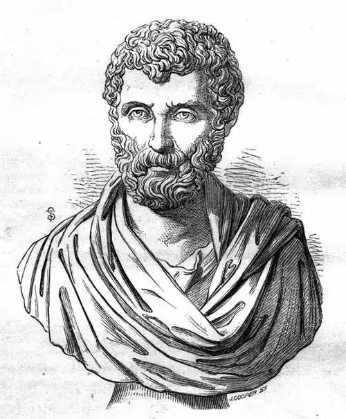

Геродот; Herodotos, 485-ок. 425 рр. до н. е., грецький історик. Народився в Галікарнасі, грецькому місті в Карії, заснованому дорійцями, який у середині V ст. до н.е. зазнав сильного ионийскому впливу. Близьким родичем Р. був поет Паниасс.
В юності Р. брав участь у повстанні проти Лигдамия, тирана Галікарнасу. Після 450 р. він назавжди покинув рідне місто і довго жив в Афінах, тодішньому культурному центрі грецького світу. Тут він публічно прочитав частину свого твору, що включала хвалу Афінам, що, за свідченнями древніх, принесло йому найвищу нагороду в 10 талантів. В Афінах же він познайомився з Софоклом і знаходився в близьких контактах з оточенням Перікла. Коли в 444-443 рр. до н. е. афіняни заснували в Південній Італії місто Фурії, Р. поїхав туди і, мабуть, залишався там до кінця життя. У різні періоди свого життя Р. здійснив ряд подорожей. Крім Малої Азії та Греції, він об'їхав узбережжі Чорного моря, країну скіфів на території нинішньої України, просунувся також в глибину перського царства, досягнувши Вавилону, а можливо, і Суз.
Він також відвідав Єгипет, фінікійські міста на сирійському узбережжі і Кирену в Африці. З країн західного басейну Середземного моря він був тільки на Сицилії ів Південній Італії (Кротон, Метапонт). Дати і тривалість цих подорожей викликають суперечки у науковців. Твір Р. під назвою Історія (Historiai) в 9 книгах написано на іонійському діалекті. Поділ на книги (і назви книг по іменах Муз) має більш пізніше походження і часто представляється механічним, оскільки розриває єдині уривки тексту. Основною ідеєю твору Р. є одвічний антагонізм Сходу і Заходу. Переломним моментом у цьому конфлікті стали греко-перські війни. Щоб показати поступове його наростання, Р. простежує всі етапи формування перської царства. Перські завоювання роблять можливим виклад історії держав по мірі їх підкорення персами. Р. викладає історію Лідії, Мідії, Вавилонії, завойованих Кіром, історію підкорення Єгипту Камбизом, описує похід Дарія проти скіфів. Іонійські повстання, перші в довгому ряду зіткнень греків з персами, дають Р. можливість заглибитися в історію Афін і Спарти, що нарешті дозволяє йому перейти до опису греко-перських воєн Дарія і Ксеркса, кульмінаційної фази конфлікту між перським Сходом і грецьким світом (битви під Марафоном, Фермопілами, Саламином і Платеями). Композиція всього твору Р. надзвичайно ускладнена (основне оповідання, екскурси і відступу в рамках цих екскурсів), бо Р. не обмежується політичною історією, але, за зразком іонійських логографов (в основному Гекатея) наводить великий географічний та етнографічний матеріал, що формує малі монографії в складі твору (опису Вавилонії, Єгипту, Скіфії), не зупиняється автор і перед вільним введенням в свою розповідь оповідань новеллистического і басенного типу. Створюючи свій твір Р. спирався на особисті спостереження, живу усну традицію і на літературні тексти. У нього не було ще розробленої історичної методології, він не вмів аналізувати джерела, однак прагнув створити по можливості об'єктивну картину минулого, наводив різні версії описуваних подій. Не раз він давав волю своїм сумнівам, хоча взагалі у нього відсутні посилання на власну думку. Цицерон не без підстави Р. назвав "батьком історії". В протилежність ионийским логографам, Р. обмежив час оповіді життям приблизно двох поколінь. В історії, крім дії людей, Р. бачив божественний промисел, який визначає долі народів і окремих людей, не допускаючи переходу певних меж ( "заздрість богів"). Значну роль у творі Р. відіграють ознаки та передбачення. Р. вплинув на Фукідіда. Його охоче цитували пізніші географи, хоча часто і оцінювали його критично. Завзятіше всього нападали на Р. Ктесий і Плутарх. У період аттицизма Р. був визнаний за зразок в області стилю (простота, виразність, епічна урочистість) і став автором для шкільного читання. У 1474 р. Лоренцо Валла виконав переклад Р. на латинську мову з грецької рукописи, привезеної в 1427 р. з Константинополя.